chromatographR: An introduction to HPLC-DAD analysis
Ethan Bass
2026-10-28
Source:vignettes/chromatographR.Rmd
chromatographR.RmdIntroduction
chromatographR is a package for the reproducible analysis of
HPLC-DAD data in R. Liquid chromatography coupled to
diode-array detection (HPLC-DAD) remains one of the most popular
analytical methodologies due to its convenience and low-cost. However,
there are currently very few open-source tools available for analyzing
HPLC-DAD chromatograms or other “simple” chromatographic data.
chromatographR provides a scriptable, open-source alternative
to proprietary GUI-based software, so an analysis can be exactly
reproduced.
The chromatographR package began as a fork from the previously published alsace package (Wehrens et al. 2015), but has been reworked with improved functions for peak-finding, integration and peak table generation as well as a number of new tools for data visualization and downstream analysis. Unlike alsace, which emphasized multivariate curve resolution through alternating least squares (MCR-ALS), chromatographR is developed around a more conventional workflow that should seem more familiar to users of standard software tools for HPLC-DAD analysis. chromatographR includes tools for a) pre-processing, b) retention-time alignment, c) peak-finding, d) peak-integration and e) peak-table construction, as well as additional functions useful for analyzing the resulting peak table.
Workflow
Loading data
chromatographR can import data from a growing list of proprietary
file formats using the read_chroms function from the
chromConverter package. Supported file formats include ‘Agilent
ChemStation’ and ‘MassHunter’ (.D) files, ‘Thermo Raw’
(.raw), ‘Chromeleon’ UV ASCII (.txt), ‘Waters
ARW’ (.arw), ‘Shimadzu’ ASCII (.txt), and
more. (For a complete list, see the chromConverter
documentation). Select the appropriate file format by specifying the
format_in argument (e.g., csv,
chemstation_uv, masshunter_dad,
chromeleon_uv, waters_arw, etc).
> path <- 'foo' # path to parent directory
>
> # single folder
> read_chroms(paths = path, format_in = "chemstation_uv")
>
> # multiple folders
> folders <- list.files(path = path, full.names = TRUE)
> dat <- read_chroms(folders, format_in = "chemstation_uv")Example data
The package includes some example data consisting of root extracts
from tall goldenrod (Solidago altissima). Roots were extracted
in 90% methanol and run on an Agilent 1100 HPLC coupled to a DAD
detector, according to a previously described method (Uesugi and Kessler 2013). The dataset is called
Sa (abbreviated from Solidago altissima).
> data(Sa)Pre-processing data
Data from liquid chromatography often carry non-informative
artifacts, such as noise or a drifting baseline. The data may also have
a higher resolution or wider range (along either the time or spectral
dimensions) than we require. Smoothing reduces noise in the spectral
direction, and baseline subtraction corrects a drifting baseline.
Interpolating wavelengths and retention times reduces the dimensionality
of the data, which makes samples easier to compare and cuts the time and
memory that downstream analyses need. All three (smoothing, baseline
correction, and interpolation) are available through the
preprocess function and are enabled by default.
To select a narrower range of times and/or wavelengths, supply them
to the optional dim1 and dim2 arguments.
Several estimators are available for baseline correction. Here we
focus on the default estimator: asymmetric least squares
("als", via ptw::asysm (Bloemberg et al.
2010)), which fits a smooth curve to the signal while weighting
points above the fit differently from points below it; the strength of
that asymmetry is set by p and the stiffness of the curve
by stiffness. Three other estimators are available –
"arpls", "aspls" and "snip" –
which differ in how they decide what counts as baseline (see
?baseline_estimators for further details).
The stiffness argument controls how rapidly the estimated baseline
can vary. Larger values produce a stiffer baseline that follows only
slower changes in the signal. The effective stiffness depends on the
sampling interval, so the same value can produce different baselines for
differently sampled data. Because baseline correction is applied after
interpolation, the effective stiffness is determined by the
dim1 grid. Accordingly, the time grid should be chosen
before tuning stiffness.
> # choose dimensions for interpolation
> new_times <- seq(10, 18.66, by = .01) # choose time-points
> new_wavelengths <- seq(200, 318, by = 2) # choose wavelengthsMaking the baseline too flexible is the failure mode to watch out
for. Below, the zoomed chromatogram is plotted with two estimated
baselines. At stiffness = 1e3 the baseline bends up into
the peak shoulders around 12.5 and 13.8 minutes, and the signal it
absorbs is subtracted from the peaks above it. At 2e5, the baseline
follows the drift while remaining below the peak shoulders. There is no
universally correct value here: what works depends mostly on how sharply
your own baseline curves, which is why it is worth plotting the fit.
> i <- 2 # chromatogram number in list of data
> wavelength <- '200.00000' # this must match one of the column names from your chromatogram
> trace <- Sa[[i]][, wavelength, drop = FALSE]
>
> fit_baseline <- function(stiffness){
+ preprocess(trace, dim1 = new_times, interpolate_cols = FALSE,
+ stiffness = stiffness, attach_baseline = TRUE,
+ show_progress = FALSE)
+ }
> too_flexible <- fit_baseline(1e3)
> about_right <- fit_baseline(2e5)
>
> plot_baseline(too_flexible, lty=2, zoom = TRUE, annotate=FALSE, main="")
> plot_baseline(about_right, add=TRUE, col="darkgreen")
> legend("topright", c("stiffness = 1e3", "stiffness = 2e5"),
+ col = c("red", "darkgreen"), lty = c(2, 1), lwd = 2, bty = "n")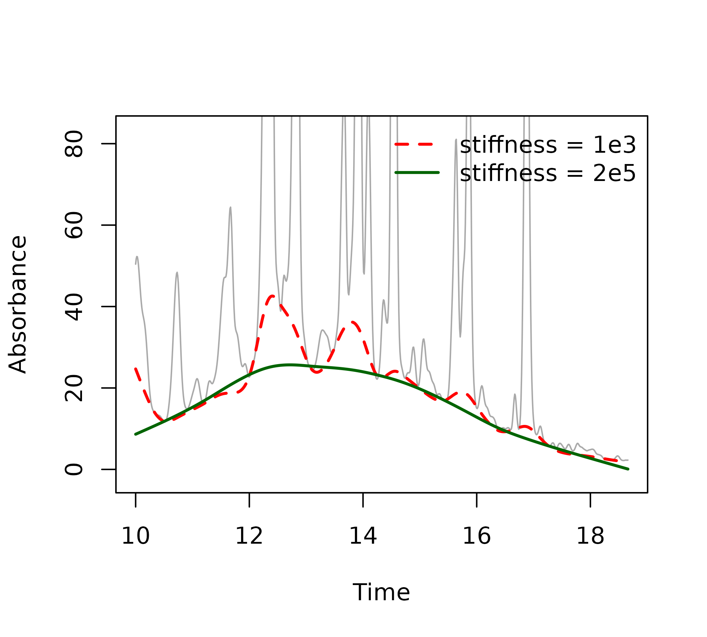
Estimated baselines on one wavelength of one chromatogram, plotted so
that only the baseline region is visible (the peaks run off the top of
the panel). At stiffness = 1e3 (red, dashed) the baseline
rides up into the peak shoulders; at 2e5 (green) it follows
only the drift.
The stiffness chosen above carries straight into the
call below, which applies it to the whole dataset on the same time grid.
For 2D data (e.g., from a single-wavelength detector), the
dim2 argument should be left blank.
> dat.pr <- preprocess(Sa, dim1 = new_times, dim2 = new_wavelengths,
+ stiffness = 2e5, cl = 1)Alignment
In many cases, liquid chromatography can suffer from retention time
shifts of varying degree (e.g., due to temperature fluctuations, column
degradation, or subtle changes in mobile-phase composition), which can
make it very difficult to compare peaks across samples. Luckily, a
number of “time-warping” algorithms have been developed for correcting
these kinds of shifts. In chromatographR, the
correct_rt function offers three: parametric time warping
(ptw) (Eilers 2004; Bloemberg et al. 2010), variable penalty
dynamic time warping (vpdtw) (Clifford et al. 2009; Clifford and Stone 2012),
and landmark parametric time warping (lptw), which fits the
warping polynomial to matched peak positions rather than to the full
signal. The two covered below are ptw and
vpdtw. Both warping functions aim to produce a better
alignment of features by “warping” the time-axis of each supplied
chromatogram to match a reference chromatogram. (The reference
chromatogram can either be determined algorithmically or selected
manually by setting the reference argument).
First, we check the alignment of our chromatograms using the
plot_chroms function.
> plot_chroms(dat.pr, lambdas = 210, show_legend = TRUE)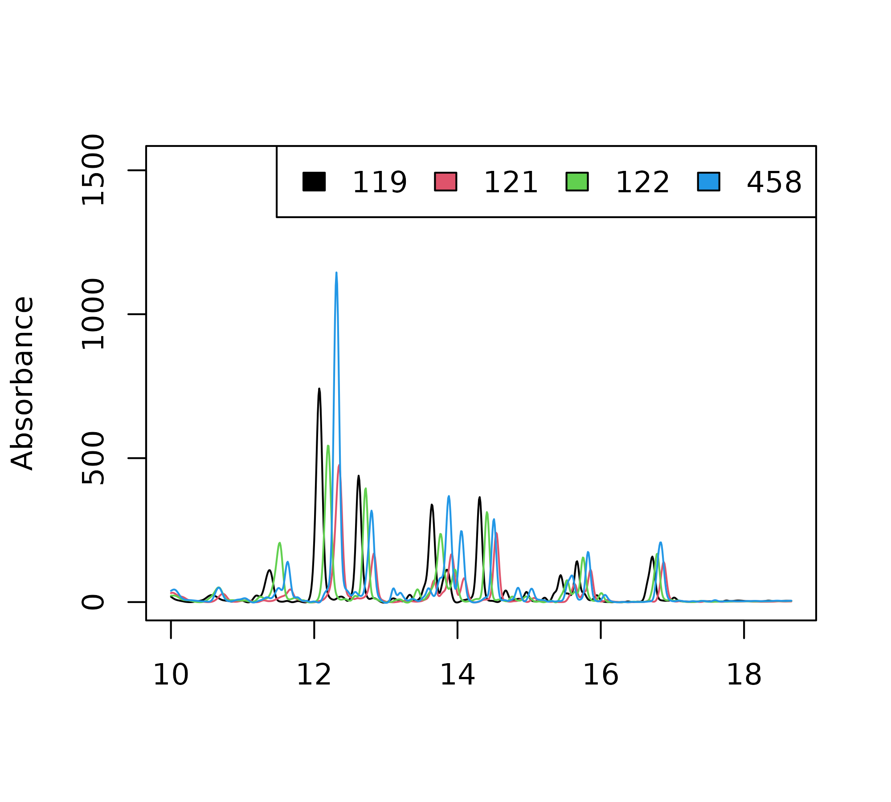
Chromatographic traces of four S. altissima root chromatograms at 210 nm.
Our chromatograms appear to be shifted, as shown by the poor overlap of the chromatograms across our four samples. To remedy this problem, we can try to “warp” our chromatograms using one of the two options described above.
Parametric time warping
The ptw option can take a single wavelength or a list of
wavelengths provided by the user using the lambdas
argument. For each chromatogram, ptw then produces a
“global” warping function across all the wavelengths supplied by the
user. The code block below creates warping models for the samples in the
provided list of data matrices. The same function is then used to warp
each chromatogram according to the corresponding model, by setting the
models parameter. Depending on the variety of your samples
and the severity of the retention time shifts, it may take some
experimentation with the warping parameters to get satisfactory results.
Fewer peaks can work better here: a wavelength carrying fewer peaks
sometimes yields a better warping model. (Also see the documentation for
ptw for more
guidance on warp function optimization).
> warping.models <- correct_rt(dat.pr, alg = "ptw", what = "models", lambdas = 210, scale = TRUE)
> warp_ptw <- correct_rt(chrom_list = dat.pr, models = warping.models, what = "corrected.values")We can then use the following code snippet to compare the alignment of warped (top panel) and unwarped (bottom panel) chromatograms.
> par(mfrow=c(2,1))
> plot_chroms(dat.pr, lambdas = 210, show_legend = FALSE)
> legend("topleft", legend = "Raw data", bty = "n")
>
> plot_chroms(warp_ptw, lambdas = 210, show_legend = FALSE)
> legend("topleft", legend = "PTW", bty = "n")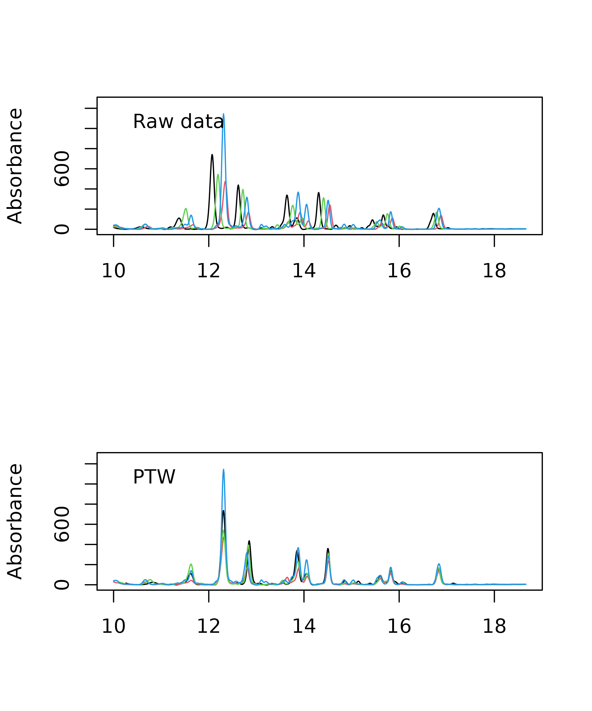
Comparison of parametric time warping (PTW) aligned chromatograms and raw data.
Clearly, the alignment is considerably improved after warping. You
can also use the correct_rt function to do a global
alignment on multiple wavelengths, by providing a list of wavelengths to
the lambdas argument, but this will not always improve the
results. While the alignment still isn’t perfect after warping, it is
probably good enough to align our peaks and assemble them in the peak
table, which is our primary goal.
Variable penalty dynamic time warping
Variable penalty dynamic time warping is another algorithm that can
be very effective for correcting retention time shifts (Clifford et al. 2009; Clifford and Stone 2012).
Instead of calculating an explicit warping function, dynamic time
warping (DTW) works by repeatedly shifting, expanding or contracting the
time axis in small steps until a satisfactory alignment is attained.
This process can result in very close matching of peaks, but can also
lead to severe peak distortion if the time axis is repeatedly expanded
and/or contracted (Tomasi et
al. 2004). Variable penalty dynamic time
warping is a derivative of DTW that constrains expansion and
contraction of the time-axis by applying a penalty to these types of
“risky” moves. This often places peaks very closely, but it does not
prevent distortion: a peak that falls where the warp changes is still
stretched or squeezed, and its area changes with it (see Peak
detection and integration below). Unlike PTW,
VPdtw can only take a single wavelength as input (but it
returns a global warping on the whole chromatographic matrix). The code
snippet below uses VPdtw to warp the example chromatograms using the
first chromatogram as a reference. The penalty,
max_shift and dilation_span parameters can be
adjusted to control the degree of warping. The latter two are widths
along the time axis, given in minutes.
(Note: VPdtw is a suggested rather than a required
dependency, since it needs a working C++ compiler.)
> vpdtw_models <- correct_rt(chrom_list = dat.pr, alg = "vpdtw", lambdas = 210,
+ what = "models")
> warp_vpdtw <- correct_rt(chrom_list = dat.pr, models = vpdtw_models,
+ alg = "vpdtw", lambdas = 210)> par(mfrow=c(2,1))
> plot_chroms(dat.pr, lambdas = 210, show_legend = FALSE)
> legend("topleft", legend = "Raw data", bty = "n")
>
> plot_chroms(warp_vpdtw, lambdas = 210, show_legend = FALSE)
> legend("topleft", legend = "VPdtw", bty = "n")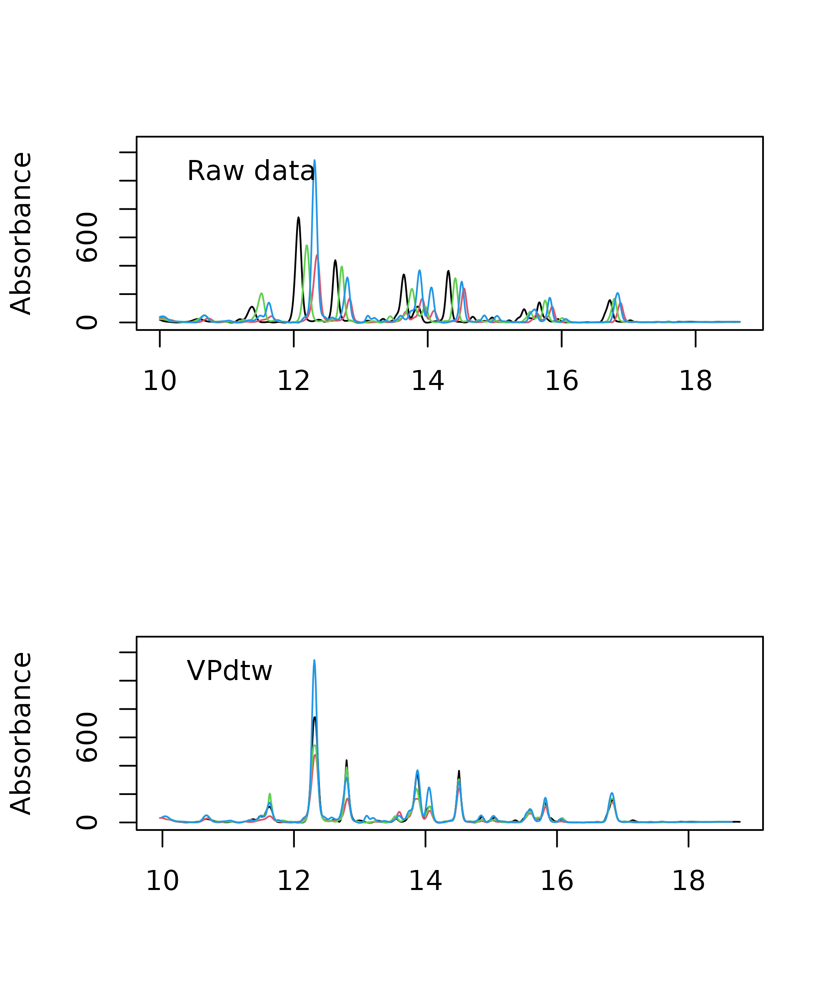
Comparison of variable penalty dynamic time warping (VPdtw) aligned chromatograms (top) with raw data (bottom).
Chromatograms can also be visualized as heatmaps with
plot_chroms_heatmap, which can be a powerful way to check
the alignment of chromatograms across samples.
> par(mfrow=c(3,1))
> plot_chroms_heatmap(dat.pr, lambdas = 210, show_legend = FALSE,
+ title="Raw data")
> plot_chroms_heatmap(warp_ptw, lambdas = 210, show_legend = FALSE,
+ title="Parametric Time Warping (PTW)")
> plot_chroms_heatmap(warp_vpdtw, lambdas = 210, show_legend = FALSE,
+ title="Variable Penalty Dynamic Time Warping (VPdtw)")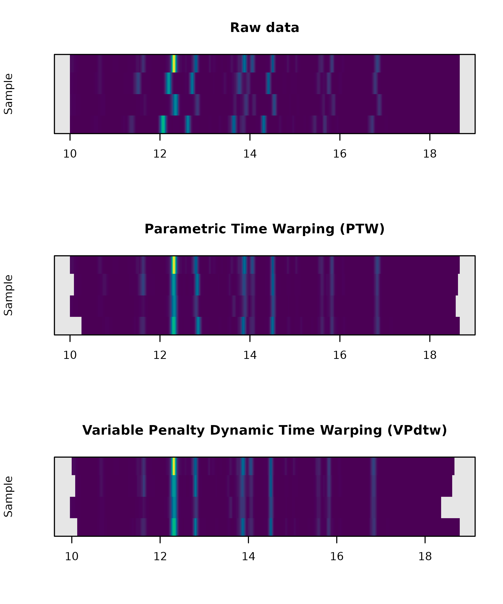
Heatmaps of the raw chromatograms (top), and of the chromatograms aligned by parametric time warping (middle) and variable penalty dynamic time warping (bottom).
In this case the alignments produced by the two algorithms are quite similar, but in other cases one algorithm may dramatically outperform the other. PTW’s parametric warp can occasionally go awry and overwarp the data, distorting peaks. On the other hand, PTW fits an explicit model to each chromatogram, and its coefficients often reveal problematic samples.
Peak detection and integration
The get_peaks function produces a nested list of peaks
by looping through the supplied chromatograms at the specified
wavelengths, finding peaks, and fitting them to the specified function
using non-linear least squares. The area under each fitted curve is then
estimated by the trapezoidal rule. The fit argument
specifies the peak model. By default, peaks are fit to an
exponential-gaussian hybrid function ("egh") (Lan and Jorgenson 2001). The other models are
the bidirectional exponentially modified gaussian ("bemg")
and "gaussian". Alternatively, peak areas can be integrated
without applying a model (fit = "raw"). The function
returns a nested list of data.frames containing parameters for the peaks
identified in each chromatogram.
Integrate the unaligned chromatograms (dat.pr), not the
warped ones. Warping resamples the signal, so any peak it stretches or
squeezes is no longer the peak that was measured, and its area is wrong.
Alignment is still needed to decide which peaks are the same compound
across samples; correct_peaks supplies it by mapping each
peak’s retention time through the warping models, leaving areas
untouched.
> # find and integrate peaks using bidirectional exponentially modified gaussian
> pks_bemg <- get_peaks(dat.pr, lambdas = c(210), fit = "bemg")
>
> # find and integrate peaks using gaussian peak fitting
> pks_gauss <- get_peaks(dat.pr, lambdas = c(210), fit = "gaussian")
>
> # find and integrate peaks using exponential-gaussian hybrid model
> pks_egh <- get_peaks(dat.pr, lambdas = c(210), fit = "egh")
>
> # map retention times onto the aligned time axis
> pks_egh <- correct_peaks(pks_egh, mod_list = vpdtw_models, chrom_list = dat.pr)Visualization
The plot.peak_list function shows how well the peaks
were integrated. Below we compare the peaks fitted for the first
chromatogram (idx = 1) using the three peak models. On
these data, both asymmetric models fit more closely than the symmetric
gaussian, as the r.squared column of each peak list
shows.
> par(mfrow=c(3,1))
> plot(pks_gauss, idx = 1, lambda = 210)
> legend("topright", "Gaussian", bty = "n")
>
> plot(pks_egh, idx = 1, lambda = 210)
> legend("topright", "Exponential-gaussian hybrid", bty = "n")
>
> plot(pks_bemg, idx = 1, lambda = 210)
> legend("topright", "Bidirectional exponentially modified gaussian", bty = "n")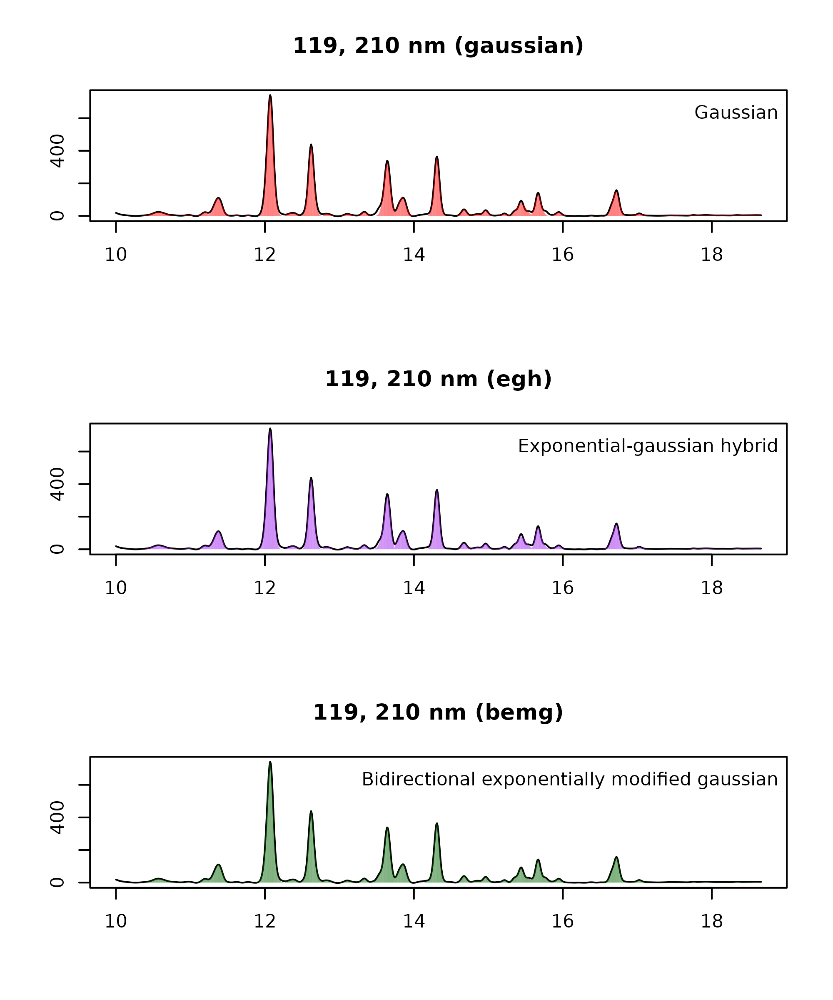
Comparison of peak models: gaussian (top), exponential-gaussian hybrid (middle) and bidirectional exponentially modified gaussian (bottom).
Local baseline correction
When peaks sit on a rising or falling background — for example,
during gradient elution — the baseline argument fits a
local baseline beneath each peak. Setting baseline = "flat"
fits a constant offset per peak; baseline = "sloped" fits a
linearly varying baseline across the peak window. In both cases peak
heights and areas are computed above the fitted baseline.
The effect is most visible on data that has not been baseline-corrected during preprocessing. Below, we preprocess the raw data without baseline correction to better illustrate the difference.
> dat.pr.ubc <- preprocess(Sa[2], dim1 = new_times, dim2 = new_wavelengths,
+ baseline = "none", cl = 1)
>
> pks_ubc <- get_peaks(dat.pr.ubc, lambdas = 210, fit = "egh", cl = 1)
> pks_flat <- get_peaks(dat.pr.ubc, lambdas = 210, fit = "egh", baseline = "flat", cl = 1)
> pks_sloped <- get_peaks(dat.pr.ubc, lambdas = 210, fit = "egh", baseline = "sloped", cl = 1)
>
> par(mfrow=c(3,1))
> plot(pks_ubc, lambda = 210)
> legend("topright", "Uncorrected", bty = "n")
>
> plot(pks_flat, lambda = 210)
> legend("topright", "Flat baseline", bty = "n")
>
> plot(pks_sloped, lambda = 210)
> legend("topright", "Sloped baseline", bty = "n")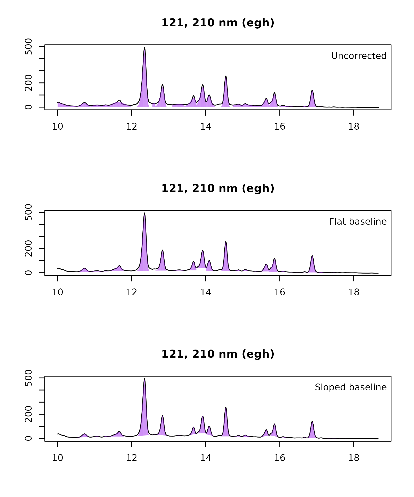
Comparison of peak fitting with no baseline (top), a flat baseline (middle), and a sloped baseline (bottom) on un-baseline-corrected data. Shaded areas represent the fitted peak above the local baseline.
Peak filtering
The peak-finding algorithm often detects peaks that are little more
than noise. Filtering these out at this stage reduces the cost of peak
table construction, which matters most when there are many samples. Call
filter_peaks on the peak_list to filter by
peak width (min_fwhm, max_fwhm), height or
area, or pass min_amplitude to get_peaks to
drop low apices before they are fitted.
To set the width limits, and the peak-finding settings, from the widths of your own peaks, see the peak-finding article.
Peak table assembly
After obtaining a peak_list, the
get_peaktable function links peaks across samples by
hierarchical clustering (complete linkage on retention times, by
default). It returns a peak_table object with samples as
rows and peaks as columns. The peak_table object also has
slots for holding metadata about peaks, samples, and the parameters used
in the analysis. With many samples this step is expensive, so filter the
peak_list before passing it to get_peaktable
(see Peak filtering above). Peaks can also be filtered after
peak_table assembly using the filter_peaktable
function. An important parameter here is hmax, the height
at which the clustering tree is cut, which controls how closely
retention times must agree to be matched across samples. A low value of
hmax increases the odds of splitting a single peak across
multiple columns, while a high value increases the odds of combining
multiple peaks into the same column.
Because pks_egh carries corrected retention times,
get_peaktable clusters on those, and functions that later
read spectra or traces from the peak table use the aligned chromatograms
automatically, rebuilt from the warping models that
correct_peaks stored.
> # assemble peak table from peak_list saved in `pks_egh`
> pk_tab <- get_peaktable(pks_egh, response = "area", hmax = 0.2)
>
> # print first six columns of peak table
> head(pk_tab$tab[,1:6]) V1 V2 V3 V4 V5 V6
119 0.000000 5.433084 0.6104369 2.0632364 15.065750 0.3051644
121 0.000000 4.183750 1.0255052 0.5964413 7.830246 0.0000000
122 3.814608 8.343632 0.6042582 2.0559778 25.787379 1.7809250
458 6.797762 6.311539 2.2515294 1.9966939 14.256253 1.2782027If you only need a few known compounds,
get_peaks(targets = ...) fits only the peaks at the
retention times you list, and get_peaktable returns one
named column per target. See ?targeted_analysis, and the targeted
analysis article for a worked example.
Further analysis and data-visualization
Attaching metadata
To begin analyzing your peak table, you will usually want to attach
sample metadata to the peak_table object. Use the
attach_metadata function. Its metadata
argument takes a data.frame of experimental metadata with
one column matching your sample names; name that column as a string in
the column argument. The ordered metadata is stored in the
sample_meta slot of your peak table. The peak table can
then be normalized (e.g., by dividing out the sample weight) using the
normalize_data function.
> # load example metadata
> path <- system.file("extdata", "Sa_metadata.csv", package = "chromatographR")
> meta <- read.csv(path)
> # attach metadata
> pk_tab <- attach_metadata(peak_table = pk_tab, metadata = meta, column = "vial")
> # normalize peak table by sample mass
> pk_tab <- normalize_data(peak_table = pk_tab, column = "mass")Attaching reference spectra
Optionally, attach scaled reference spectra to the
peak_table with the attach_ref_spectra
function. This can be helpful for working with UV spectra
programmatically (e.g., to sort peaks by their chromophores). Reference
spectra are defined either as the spectrum with the highest intensity
for each peak (when ref = "max.int") or as the spectrum
with the highest average correlation to the other spectra associated
with the peak (when ref = "max.cor"). Below we use these
spectra to construct a correlation matrix and find peaks matching a
particular chromophore.
> pk_tab <- attach_ref_spectra(pk_tab, ref = "max.int")
> cor_matrix <- cor(pk_tab$ref_spectra)
> hx <- names(which(cor_matrix[,"V21"] > .97))
> matplot(x = as.numeric(rownames(pk_tab$ref_spectra)),
+ y = pk_tab$ref_spectra[, hx], type = 'l',
+ ylab = "Abs (mAU)",
+ xlab = "Wavelength (nm)")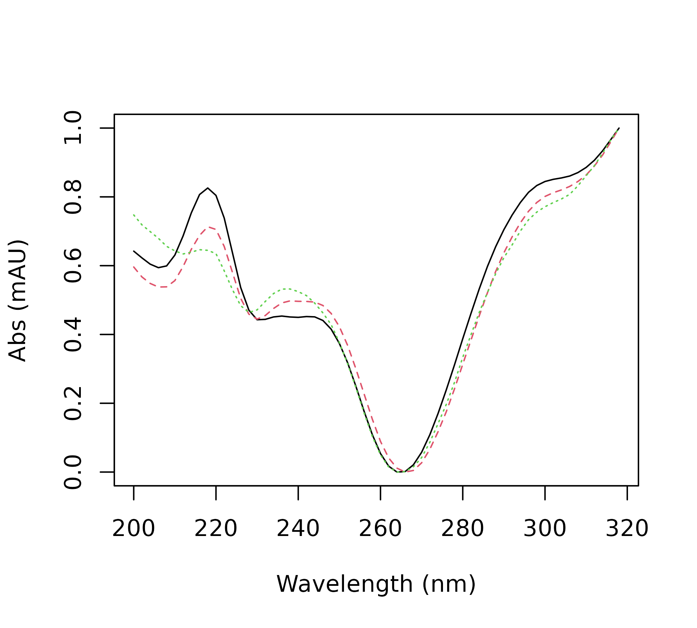
Data visualization
Mirror plot
The mirror_plot function provides a quick way to
visually compare results across treatment groups.
> mirror_plot(pk_tab, lambdas = c(210), var = "trt", legend_size = 2)Plotting spectra
The plot_spectrum function plots or returns the spectra
associated with a particular peak in your peak table – useful for
checking whether the spectra for a peak match across samples, or for
comparing one against a known standard. Set plot_spectrum
or plot_trace to FALSE to draw only the other.
By default it plots the trace and spectrum from the chromatogram with
the largest peak in the peak table; idx and
lambda choose the chromatogram and wavelength instead.
> par(mfrow = c(2,1))
> peak <- "V8"
> plot_spectrum(peak, peak_table = pk_tab, chrom_list = warp_vpdtw,
+ verbose = FALSE)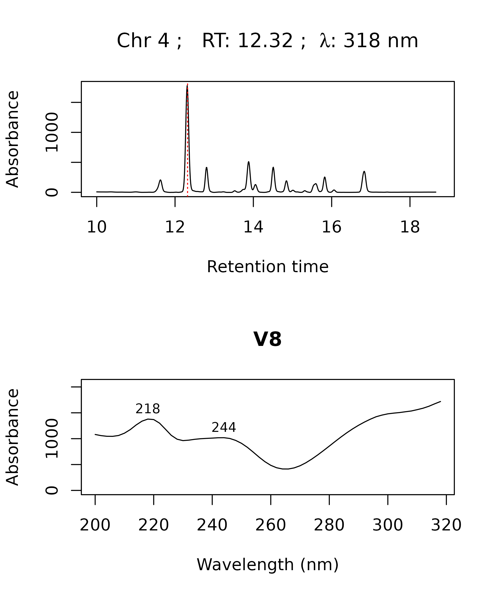
The plot_spectrum function also generates interactive
plots using plotly.
> plot_spectrum(peak, peak_table = pk_tab, chrom_list = warp_vpdtw,
+ verbose = FALSE, engine = "plotly")The plot_all_spectra function compares the spectra for a
specified peak across all samples.
> par(mfrow=c(1,2))
> plot_all_spectra("V14", peak_table = pk_tab, export_spectrum = FALSE)
> plot_all_spectra("V15", peak_table = pk_tab, export_spectrum = FALSE)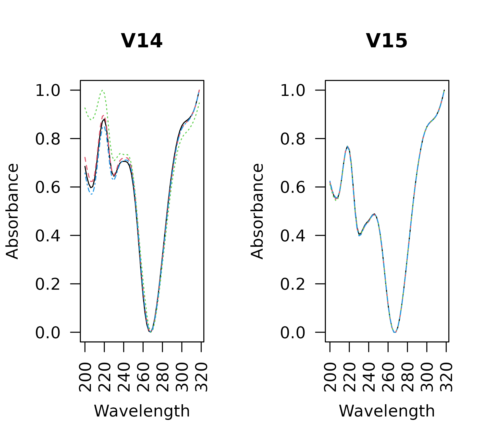
Inconsistent spectra, as in V14, can indicate a problem
with the alignment, or co-elution of several substances in the same
retention window. By contrast, V15 looks relatively
pure.
The plot_spectrum_inset function plots spectra onto the
chromatogram.
> plot_spectrum_inset("V14", peak_table = pk_tab,
+ verbose = FALSE, xlab="Retention time (min)",
+ position="top", inset_width = 0.25)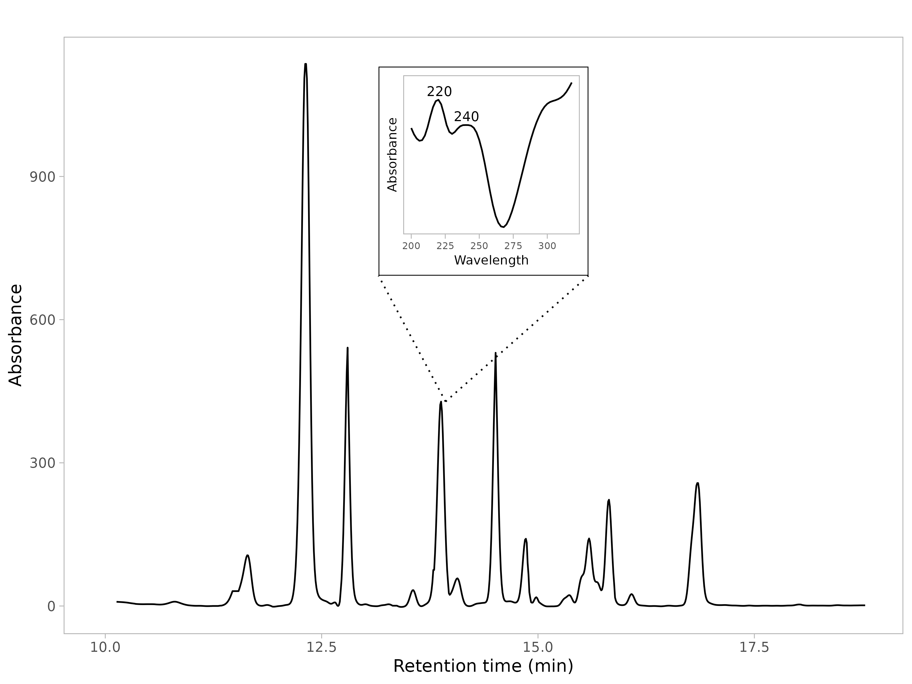
Passing several peaks draws one inset per peak, titled by the names
of loc. Additional peaks can be labeled with arbitrary
labels using the annotate_peaks function.
> plot_spectrum_inset(c("Unknown 1" = "V8",
+ "Unknown 2" = "V16"), idx=c(1:4),
+ peak_table = pk_tab,
+ verbose = FALSE, xlab="Retention time (min)",
+ position=list(c(0.0,0.6),c(0.55,0.4)), inset_width = 0.25,
+ scale_spectrum = FALSE) |>
+ annotate_peaks(loc = c(A = "V6", B = "V8", C="V18",
+ D = "V22", E = "V23"), peak_table = pk_tab)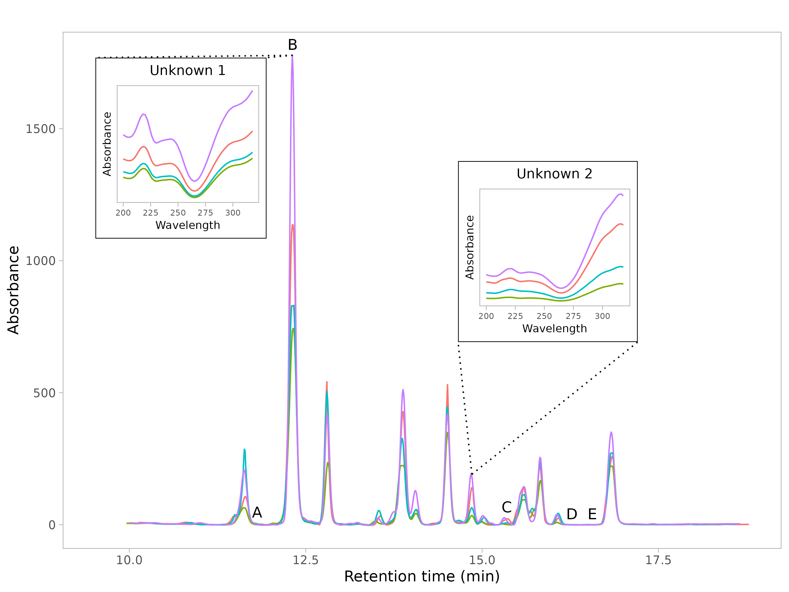
Plot peak table function
The plot.peak_table function is a simplified interface
to the plots above: it dispatches to plot_spectrum and
plot_all_spectra, and compares results across treatments by
calling boxplot.
> par(mfrow = c(3,1))
> plot(pk_tab, loc = "V14", box_plot = TRUE, vars = "trt", verbose = FALSE)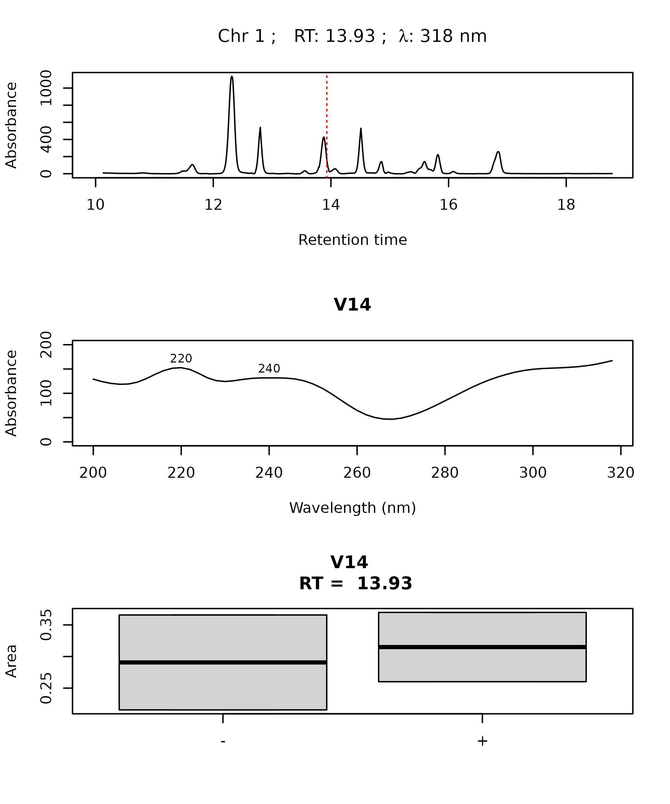
References
Session Information
> sessionInfo()R version 4.6.1 (2026-06-24)
Platform: x86_64-pc-linux-gnu
Running under: Ubuntu 26.04.1 LTS
Matrix products: default
BLAS: /usr/lib/x86_64-linux-gnu/openblas-pthread/libblas.so.3
LAPACK: /usr/lib/x86_64-linux-gnu/openblas-pthread/libopenblasp-r0.3.32.so; LAPACK version 3.12.0
locale:
[1] LC_CTYPE=C.UTF-8 LC_NUMERIC=C LC_TIME=C.UTF-8
[4] LC_COLLATE=C.UTF-8 LC_MONETARY=C.UTF-8 LC_MESSAGES=C.UTF-8
[7] LC_PAPER=C.UTF-8 LC_NAME=C LC_ADDRESS=C
[10] LC_TELEPHONE=C LC_MEASUREMENT=C.UTF-8 LC_IDENTIFICATION=C
time zone: UTC
tzcode source: system (glibc)
attached base packages:
[1] parallel stats graphics grDevices utils datasets methods
[8] base
other attached packages:
[1] chromatographR_0.9.0 knitr_1.52
loaded via a namespace (and not attached):
[1] gtable_0.3.6 xfun_0.62
[3] bslib_0.12.0 ggplot2_4.0.3
[5] htmlwidgets_1.6.4 caTools_1.18.4
[7] lattice_0.22-9 vctrs_0.7.3
[9] tools_4.6.1 bitops_1.1-0
[11] generics_0.1.4 tibble_3.3.1
[13] pkgconfig_2.0.3 Matrix_1.7-5
[15] data.table_1.18.6.1 RColorBrewer_1.1-3
[17] S7_0.2.2 desc_1.4.3
[19] readxl_1.6.0 lifecycle_1.0.5
[21] compiler_4.6.1 farver_2.1.2
[23] stringr_1.6.0 ptw_1.9-17
[25] textshaping_1.0.5 RcppDE_0.1.9
[27] minpack.lm_1.2-4 htmltools_0.5.9
[29] sass_0.4.10 yaml_2.3.12
[31] Formula_1.2-6 pillar_1.11.1
[33] pkgdown_2.2.1.9000 jquerylib_0.1.4
[35] RaMS_1.4.3 cachem_1.1.0
[37] tidyselect_1.2.1 digest_0.6.39
[39] stringi_1.8.9 dplyr_1.2.1
[41] purrr_1.2.2 labeling_0.4.3
[43] VPdtw_2.2.1 fastmap_1.2.0
[45] grid_4.6.1 cli_3.6.6
[47] chromConverter_0.11.2.9000 magrittr_2.0.5
[49] base64enc_0.1-6 dynamicTreeCut_1.63-1
[51] withr_3.0.3 scales_1.4.0
[53] bit64_4.8.6 rmarkdown_2.32
[55] bit_4.6.0 otel_0.2.0
[57] reticulate_1.47.0 cellranger_1.1.0
[59] fastcluster_1.3.0 ragg_1.5.2
[61] png_0.1-9 pbapply_1.7-5
[63] evaluate_1.0.5 rlang_1.3.0
[65] Rcpp_1.1.2 glue_1.8.1
[67] xml2_1.6.0 jsonlite_2.0.0
[69] R6_2.6.1 systemfonts_1.3.2
[71] fs_2.1.0